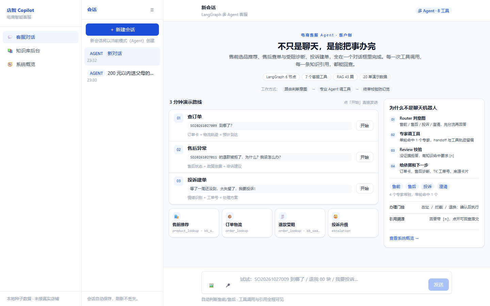
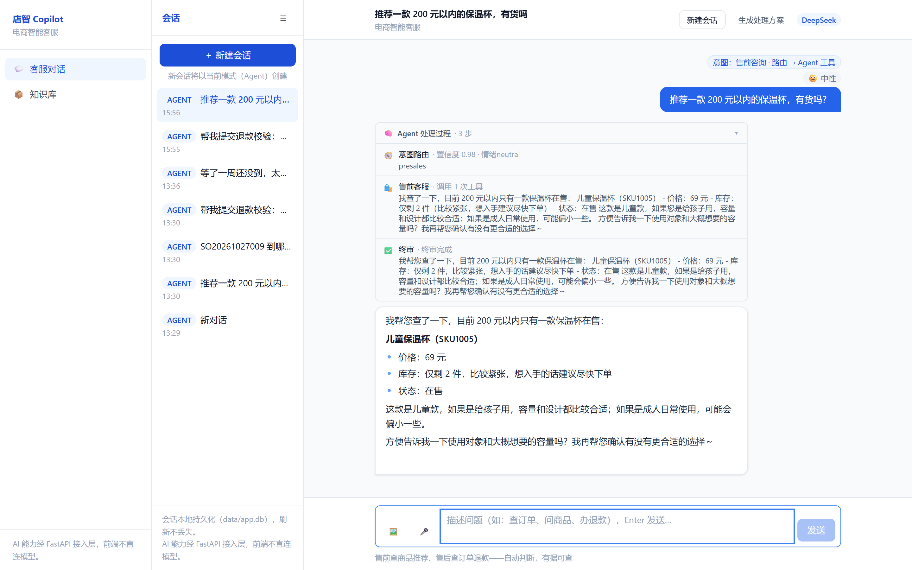
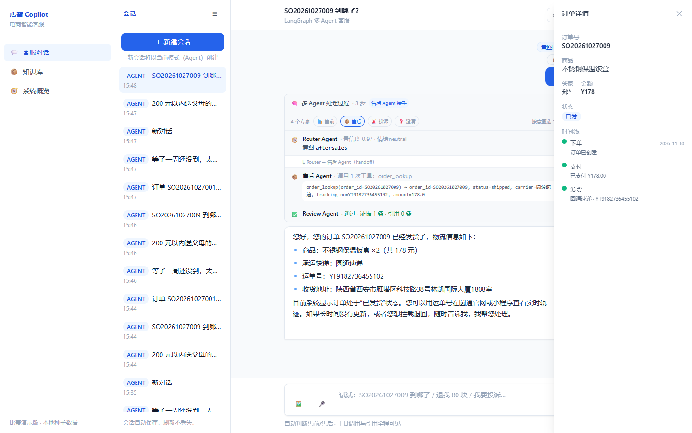
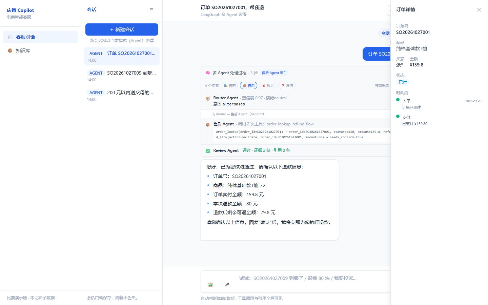
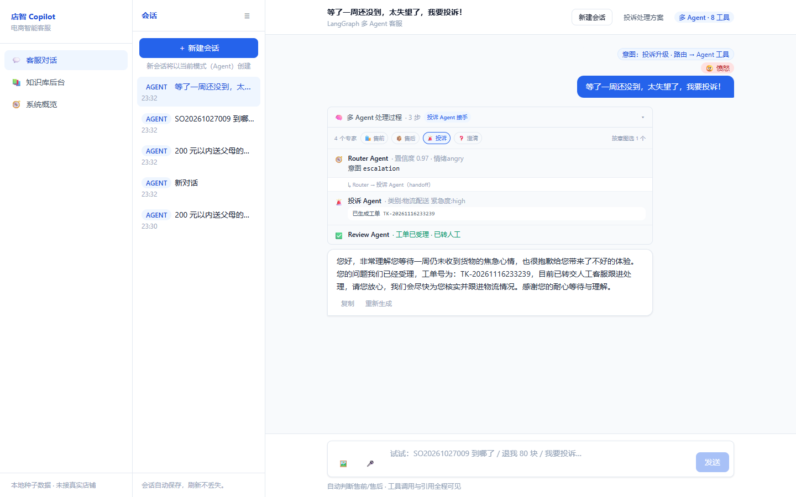
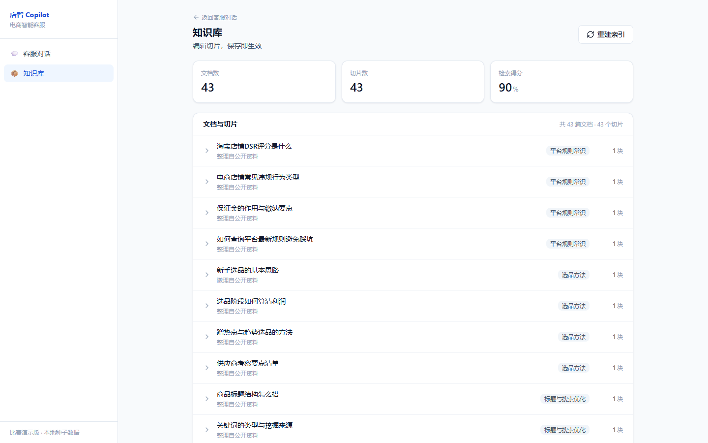

面向客户的电商智能客服 Agent
售前查商品推荐 · 售后查订单退款 · 投诉升级工单
团队信息：邢博、刘庆昊、孔克铮 / 河北传媒学院 / 人工智能
售前查商品推荐、售后查订单退款、投诉生成工单，一个对话框全搞定。不是只会聊天的问答工具，而是能调用工具、能校验、能溯源、敏感操作需客户确认的智能客服。
店智 Copilot 面向电商店铺的客户（下单前咨询、下单后查单退款投诉），解决"问商品、查订单、办售后"反复在多个页面之间切换的问题。系统把服务收进两个业务入口，并提供独立的系统概览页 /overview：
/chat：LangGraph 多 Agent 编排，Router 自动判断售前/售后/投诉/澄清，调用对应工具，回答带 [n] 引用可溯源。/kb：43 篇运营知识文档，商家维护商品知识/售后政策，Agent 据此回答；支持切片编辑，保存后重新嵌入并失效旧检索。项目自带 20 单模拟订单、12 个 SKU 和 43 篇知识库语料，不依赖真实平台授权。启动方式：
pip install -r backend/requirements.txt
cp backend/.env.example backend/.env
# 填入 DEEPSEEK_API_KEY
python -m backend.app.rag.pipeline build
uvicorn backend.app.main:app --port 8000
另一个终端：
npm install
npm run dev
打开 http://localhost:3000（/ 自动跳 /chat），按"客服对话 → 售前咨询 → 查订单 → 退款门控 → 投诉升级 → 知识库编辑"的顺序即可完成演示。


不是只会聊天的问答工具，而是能办事的客服
查订单、查物流、退款、改地址、拦截物流、退换货都在同一个对话里完成，用户不用在"问"和"做"之间切换系统。
LangGraph 多 Agent 路由，不是所有问题都走向量检索
Router 先判断售前咨询 / 售后处理 / 投诉升级 / 追问澄清，再交给对应专业 Agent；同时输出置信度与情绪标签，愤怒或焦虑的客户先安抚再办事。售前只拿商品与知识工具，售后只拿订单与办理工具，职责在工具集层面隔离。
RAG 回答带 [1][2] 角标，来源可点开核对
回答不是"模型凭印象说"，而是先检索知识库，再把命中的文档片段拼进上下文。点角标能看到标题、分类和原文片段。
Agent 过程透明
LangGraph 编排，每个 specialist 内部最多 5 步工具调用；「多 Agent 处理过程」面板把专家接手、handoff、工具名与关键返回字段、终审裁决逐步摊开。主链路 7 个客服工具（kb_search 售前售后共用，按工具位算 8 个），另有 3 个运营向工具经 MCP 暴露（MCP 共 4 个）。
敏感操作两段式门控
退款、改地址、物流拦截、退换货统一走 validate → 用户确认 → execute。模型不能直接动钱；校验不通过时直接列出原因，例如"退款金额 418 超过实付 159.8"。
知识库编辑即生效
修改切片后重新嵌入，旧检索立即失效，下一次提问就能看到新口径，不需要重启服务。
真实数据可插拔
DataProvider 协议把数据源和 Agent 解耦，默认 SQLite 种子库，也可以接 MySQL、ERP API 或 CSV。
会话可恢复、安全边界清楚
LangGraph SqliteSaver 按 thread_id 持久化检查点，刷新或重启后继续会话；前端永远不直连模型 API，DeepSeek Key 只放在 Python 层 backend/.env。


项目把 AI 能力拆成可复现的测试对象，不只靠人工点页面：
| 测试层 | 内容 | 结果 |
|---|---|---|
| 静态检查 | tsc、eslint、next build |
全部通过 |
| 接口冒烟 | 7 个接口 + 3 个页面，双服务联调 | 10/10 通过 |
| 功能回归 | 意图 4 路、引用 [1]、SqliteSaver 落盘、追问不误伤 |
通过 |
| RAG 检索自测 | 10 个查询，top-3 命中 | 9/10 = 90% |
| RAG 效果评测 v1 | 20 题、40 分制、有/无 RAG 对照 | 26 vs 23 |
| RAG 效果评测 v2 | 15 题、30 分制、有/无 RAG 对照 | 29 vs 30 |
v2 的结果没有刻意美化：通用常识题上，不带 RAG 的模型本身也能答对，所以无 RAG 反而 30/30；有 RAG 29/30。这说明 RAG 的增量主要在平台私有规则、知识库口径、引用可溯源，而不是所有题都靠检索。测试还暴露并修复了一个真实问题：早期 RAG 注入只截取 chunk 前 300 字，FABE 示例恰好落在 300 字之后，导致回答缺证据；改为完整原文后恢复得分。
另外还覆盖了：
clarify，先追问再分流，不阻断对话。product_lookup、order_lookup、kb_search、refund_flow validate/execute 等。[n] 告警、追问式回复不误伤。/v1/rag/search 同源核对。测试脚本可复现：
node scripts/smoke.mjs
python -m backend.app.rag.selftest
python -m backend.app.rag.eval
python -m backend.app.rag.eval_v2

agentRun 解析 step / delta / done 事件）。/v1/rag/search 同源。delta/done/error，工具轨迹随 done 下发。langgraph-checkpoint-sqlite 的 SqliteSaver，thread_id 与前端会话 ID 全链路一致。/api/* 代理；.env 不入库。smoke.mjs、RAG selftest、v1/v2 评测集、意图与门控回归脚本。
本文档使用 6 张真实运行截图：
[1] 引用（图 2）。截图均来自本地演示数据，不含真实客户信息、API Key 或 .env 内容。
截至本次提交，本项目未公开发表、未参加其他比赛、未获奖。
如团队有其他相关获奖或发表，请在此处补充；没有则保留本段。
本项目为原创开发，不是基于其他参赛项目或代码库二次开发。项目使用 Next.js、FastAPI 等开源框架和官方脚手架初始化；方案调研阶段参考了公开电商 RAG / Agent 项目的架构思路，但业务代码、演示数据、页面设计、工具实现和评测脚本均为自研。
如实际参考了某个具体开源仓库的代码，请补充仓库名、许可证和复用范围；没有代码复用则保留本段。